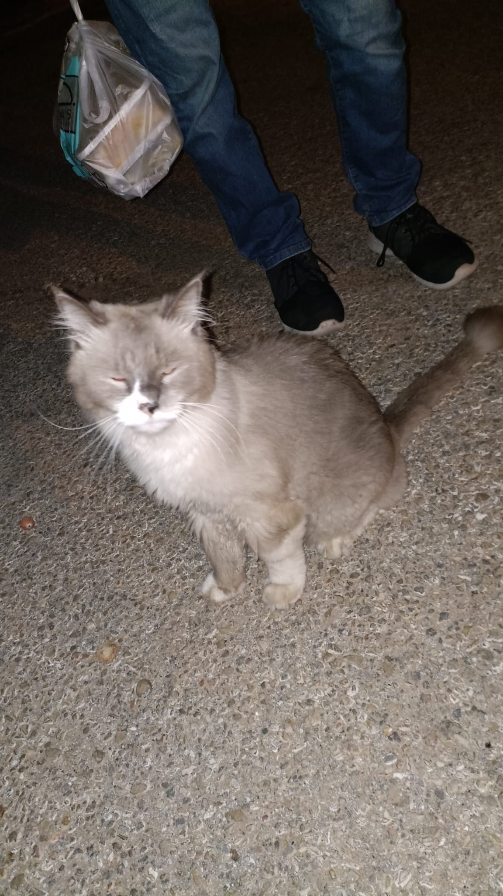
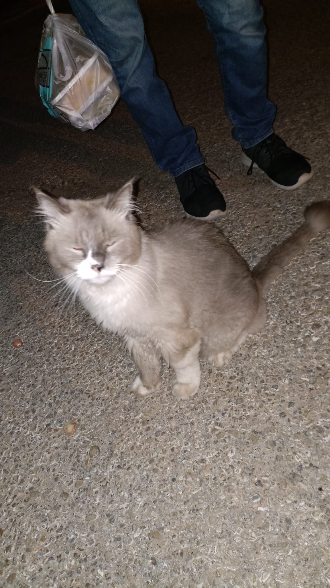

Soft and sweet, with eyes so blue
A ragdoll cat, I'm so in love with you
Your fur is fluffy, your paws so white
I could cuddle with you, day and night
Oh, my ragdoll cat
You're the cutest thing I've ever had
Your purr is like music to my ears
I could hold you close, for years and years
You love to play and climb up high
But when you're tired, you'll curl up by my side
Your meows are gentle, your whiskers long
I'm so lucky to have you in my home
Oh, my ragdoll cat
You're the cutest thing I've ever had
Your purr is like music to my ears
I could hold you close, for years and years
I don't know what I'd do without you
You bring so much joy into my life
I'll love you always, my dear ragdoll
My precious kitty, my heart's delight
Oh, my ragdoll cat
You're the cutest thing I've ever had
Your purr is like music to my ears
I could hold you close, for years and years.